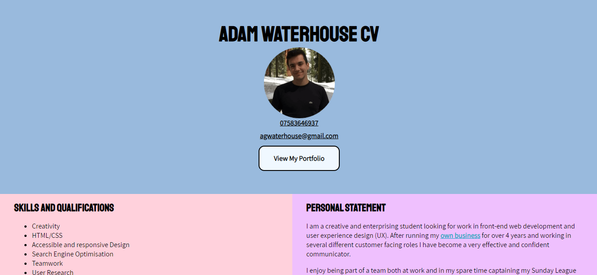
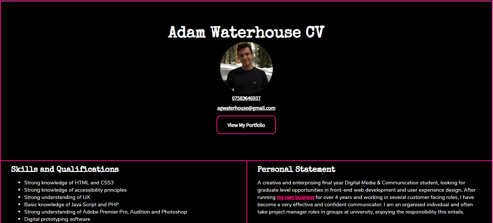

Published: 14/03/2020
I have recently been reading the brilliant Krug’s (2013) ‘Don’t make me think’, and ironically it made me think about all the parts of my original portfolio site which were not user-centric. After reading Steve’s book and working on real client based UX projects at Supremo, I have revisited my portfolio to start to practice what I preach with my own site.
Hover States
I added hover states to the clickable areas of the website, especially the ones with a small clickable target area, such as the contact me links in the footer. This will allow desktop users to be confident that they are clicking on the right link. Furthermore different link colour text ‘is not enough for the colorblind’ (Thomas, 2015:online), as these users rely on seeing a change in colour in order to detect if certain text is a link.
See the Pen Hover States by agwaterhouse (@agwaterhouse) on CodePen.
Breadcrumbs
The introduction of breadcrumbs ensured users know their current position on the website and where they came from (Krug, 2013). The breadcrumbs are hyperlinked to allow a user to go back a step if they make a mistake, or to read a different blog.
Clickable Areas
I increased the clickable area of the blog listing section, so that the entire rectangle was clickable rather than just the text. Shadeed (2019) talks of how larger target areas for the user will lead to them spending less time trying to interact with the component and improve their user experience.
See the Pen Clickable areas by agwaterhouse (@agwaterhouse) on CodePen.
Active States
The large video header occupies 70% of the users view height and is on several different pages, this made it difficult for users to decipher which page they were currently on. Lynch and Horton (2016:210) talk of ‘how design should offer constant visual and functional confirmation of the user’s whereabout’. In order to achieve this, I added active states to elements in the navigation, so the user could decipher which page they were currently on.
Spacing
Similarly, I added more white space to help users distinguish between different sections of my portfolio, this helped to create a clear visual hierarchy (Soegaard, 2020). I also used borders and lines to mark out clearer and more obvious sections for the users.
The CV Page
What’s the worse graphic design you’ve ever seen? Maybe this……
Now is the time for MPs to back the new deal and get Brexit done.#GetBrexitDone pic.twitter.com/JuqaOVdlMC
— Conservatives (@Conservatives) October 22, 2019
..for me it was the design of my own CV. The design made the user feel that they had entered a completely different website. I redesigned the CV section of my portfolio website and incorporated the style guide used for the rest of the site.


Contrast
I also added a slightly transparent black background to the navigation bar, this was to ensure that the white text links appeared on brighter screens such as mobiles. This improves the experience for disabled users who may have a visual impairment, but also for users who may be seen as ‘disabled’ in a certain situation such as looking at their phone on a bright summer day (Abou-Zahra, 2019).
Normalize CSS
I added Nomalize.css to my code base, this works similar to Reset.css, however it maintains useful browser defaults which reset.css removes (Gallagher, 2012). It enabled greater consistency between different browsers, allowing me to ensure a consistent user experience no matter what browser the user is running.
See the Pen Normalize.CSS by agwaterhouse (@agwaterhouse) on CodePen.
See the Pen Without Normalize.CSS by agwaterhouse (@agwaterhouse) on CodePen.
References
- Abou-Zahra, S. (2019) Colors with Good Contrast. 23rd January. W3C. [Online] [Accessed 20th December 2019]https://www.w3.org/WAI/perspective-videos/contrast/
- Gallagher, N. (2012) About normalize.css. 28th February. [Online] [Accessed 2nd February 2020] http://nicolasgallagher.com/about-normalize-css/
- Krug, S. (2013) Don't make me think, revisited: a common sense approach to web usability. 3rd ed., United States of America: New Riders.
- Lynch, P.J., Horton, S. (2016) Web Style Guide: Foundations of User Experience Design. 4th ed., New Haven: Yale University Press.
- Shadeed, A. (2019) Enhancing The Clickable Area Size. 13th August. [Online] [Accessed 9th January 2020] https://ishadeed.com/article/clickable-area
- Soegaard, M. (2020) Visual Hierarchy: Organizing content to follow natural eye movement patterns. 1st March. Interaction Design Foundation. [Online] [Accessed December 20th 2019 https://www.interaction-design.org/literature/article/visual-hierarchy-organizing-content-to-follow-natural-eye-movement-patterns